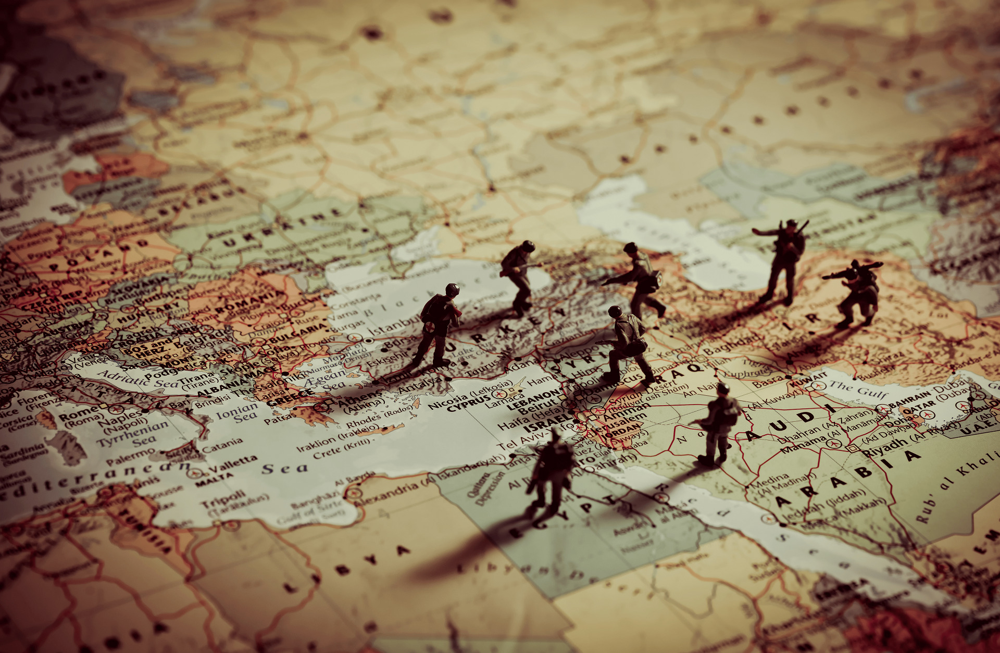

İlgi Alanlarım
- Teknoloji
- Siyasi Değişimler
- Okuma
- Belgesel İzleme

Ben güncel kalmayı seven biriyim, bu yüzden teknoloji dünyasında neler olup bittiğini takip etmeye çalışıyorum.
Bu alanda hızlı değişim ve gelişmeler yaşandığı için elimden geldiğince çağın gerisinde kalmamaya özen
gösteriyorum.
Kendimi bir uzman olarak görmüyorum ama yenilikleri öğrenmek ve gelişmeleri takip etmek hoşuma gidiyor.



Ayrıca bölgemizdeki siyasi değişimleri de takip ediyorum. Çünkü bunların hayatımızı doğrudan etkilediğine
inanıyorum.
Bazen haberlerin arkasındaki nedenleri ve olayların arka planını anlamaya çalışmak bana ilginç geliyor.


Okumak ise beni rahatlatan şeylerden biri. Sürekli okuyan biri değilim ama ilgimi çeken bir kitap ya da konu
bulduğumda keyifle okuyorum ve bunun bana yeni bakış açıları kazandırdığını hissediyorum.


Belgesel izlemeyi de severim. Özellikle tarih, doğa, teknoloji ve toplumla ilgili belgeselleri izlemek hem
eğitici hem de düşündürücü oluyor.
Yeni bilgiler öğrenmek ve farklı bakış açıları kazanmak için harika bir yol olduğunu düşünüyorum.